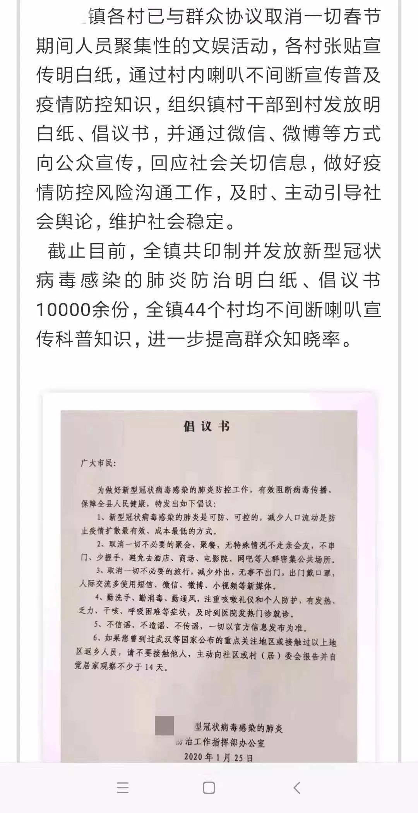

武汉肺炎疫情成全球焦点：我们知道得太少，最坏的还没到来
原文链接 备份链接 这注定是一个难捱的春节。 截至1月23日24时， 全国确诊新型肺炎病例830例， 死亡25例。 截至1月23日晚，中国新型肺炎疫情地图（来源：丁香医生） 同时，国际确诊案例也陆续出现。 截至1月23日，数据如下： 泰 …

作者：张霞
来源：商业人物（ID：biz-leaders）
壹
2020年1月24日，农历的大年三十，我典型的山东大汉老爸生了一场闷气。
这天晚上，他的亲姐姐，也就是我姑姑，携表弟来我家拜年。要面子的爸爸赶忙从抽屉深处掏出一块陈年茶饼，这块茶饼据说是几年前从一个云南商贩手中购买，一两要几百块钱，若非重要节庆和重要人员，老爸轻易不肯动用。
让爸爸难堪的是，水烧开了，茶泡好了，姑姑先是推说肠胃不好，又借口饮茶后会失眠，就是不肯下嘴。
我眼珠一转，窥破了其中“深意”，一把掀开剩余茶具上蒙的黄布，告诉姑姑：“这套茶杯是年29从超市新买回来的，没有任何人用过”。姑姑这才放下心中一块大石，长舒一口气，抿了一口。
可这一抿，也像是为了亲情英勇就义。姑姑一面端着茶杯，一面阻拦正在读博士的表弟，“你不要喝，你还年轻。”
此时，新冠肺炎正在全国蔓延。截至1月24日24时，卫生健康委收到29个省（区、市）累计报告新型冠状病毒感染的肺炎确诊病例1287例。全国各省份除西藏外，均已出现报告病例。
山东情况不算最严峻，却也有6例。但我所在的鲁中地区的农村，因本市尚无确诊人员，且尚无具体到村镇的大规模宣传，防范意识较为松懈。
村内像我这样由北京、上海、济南、青岛、湖北襄樊以及黄冈等地返乡的人，为数不少。这些人员不仅没有被上报统计，还照常进行了年前的走亲访友活动。像姑姑这样，有一些学历，懂得操作社交软件，早早就县城药店购置好了医用口罩以及消毒液等物的乡村妇女，极为少见。
我所在村子，社交平台上已经刻不容缓的疫情，以及一两个小时就要刷新一次的数据，几乎毫无作用力。在这里，五六十岁以上的中老年人，大多只收看本地电视台，相信县、乡政府的公告。
年轻人的玩意，对他们来说，就是“洋包”（意为喝了几天洋墨水，烧包）。
贰
烧包，也就是膨胀。对一个出身山东农村的人，是致命的攻击。它背后包含忘本、轻飘、不容于当地人情社会等种种意思。
在我们村，从爷爷辈到父母辈流传着一个笑话：一位去大城市参军回来的年轻人，学会了普通话，乡民问他“啥时候到家的？”，他回答说“昨晚”。乡民嘴一撇，抢白他，“还坐着船回来的呢，还坐碗（昨晚）”。
上百年来，不论外界发生什么惊天动地的变化，不论你在外面混出多大动静，过年回村，你就得变回村东头的“二蛋子”，村西头的“小翠”。得说土话，穿棉袄，叫得清楚所有亲戚，年初一到五服内（指上下各五代、共九辈人）的家堂神位前磕头，年初二探望岳父，年初三看望姥姥和舅舅。

往年春节山东农村地区祭拜祖先的场景
爸爸是这些礼节的忠实执行者。有一年的大年初一，妹妹家孩子生病住院，爸妈被紧急呼喊到医院帮忙，没能祭祀同族的祖宗。年初三，爸爸由县城回来，挨家挨户解释了一遍，只唯恐落得“对我家有意见”的误会。
而像姑姑和表弟这样，尽管早就有了防患意识，并把社交压缩到最小的乡村家庭，也无法反抗这些“礼教”——父母两方至亲的走访，还是不能省略。
口罩、酒精等一用物品，我是1月21日在县城置备的。当时各大药店尚还充足，我买了足足有几十件。分发给父母，你可以想见他们敷衍和觉得你大惊小怪的神情。
至于严格佩戴口罩，更是不亚于天方夜谭。
2018年，我到内蒙出差，看见一件式样颇为时尚的羊毛斗篷，便买下送给了妈妈。整整两年，妈妈一次没穿，问她原因，说是“去北京看你再穿，在村里穿不都得笑话你作怪啊！”可以想见，疫情初期，如果一个一辈子务农的乡村妇女或者老汉，突然在村里戴着口罩和人打牌、聊天，戴着口罩到祠堂上拜祭，那就是“作怪”呀！
爸妈畏惧别人的指指点点，在城市里最爱“作怪”，最喜到音乐节上甩头发的我，回到乡村，也不敢太过突出。
1月23日、1月24日接连两天，我穿过村巷去看望奶奶，是戴着口罩的。但见了奶奶的面，只能脱下。为的就是不让奶奶生气，背后骂我“烧包”。因是村里的长辈，节前两天，奶奶家人来人往，我还是只能摘下口罩，挨个喊“叔叔、大爷”，近距离的聊天、泡茶。
最严峻的一次考验是在1月23日傍晚，奶奶留我和湖北襄樊出差归来的堂弟，一起吃饭。千百重心思在我肠肚中翻转。吃还是不吃？要不要直说？最后，我啥也没说，帮着奶奶烧了一顿晚饭，视若寻常的咽了。
回家的路上，我问自己，我的警惕心不够吗？意识不到问题的严重吗？不怕死吗？当然都怕。可死亡面前，侥幸和面子，占据了上风。
山东人重面子，也重视给人面子，礼仪经常会变成虚礼。保证自身安全，还是得罪奶奶和堂弟的选择中，我选择了：做人，做个“好人”，亲戚眼中不那么不近人情的人。
叁
当然，对于山东人，比面子更重要的是权威。
山东人重视“上头的”说法，在乎公职。比如逢年过节，男性晚辈若是喝酒推推搡搡不痛快，往往会惹得长辈不快。身体不好、酒量不行都不是最好的说辞。但如若你说上一句，“过节期间酒驾被抓，单位会立刻开除公职”，霎时间你便被所有人原谅。甚至，会叮嘱你，“一定要遵守单位纪律”。
面对新型冠状病毒也是如此。1月25日晚，妹妹打来电话，支支吾吾表示，能否第二天不再带着两个孩子回娘家。爸爸顿时恼羞成怒，冒出一堆怪论，说是“农村才最安全，病毒怎么能找到我们这个犄角旮旯？别人都是跑到农村躲，你倒好，躲进城里。”
这恼怒，还是源自“面子”。年初二，邻居家的姑爷和姑娘纷纷上门，自家门前冷落怎么行？
我灵机一动，从网上搜索出国务院办公厅《面向社会征集有关地方和部门在疫情防控工作中责任落实不到位、防控不力等问题线索》的红头文件。告诉他，“现在国家极其重视，公职人员一旦不遵守纪律，乱串门，被人举报后会严肃查处，后果十分严重。”
爸爸顿时火力消散一半，偃旗息鼓了。
等到了1月26日，我县的疫情防控工作，开始正式落实到每个村落。这显然已经算是有些迟缓了。
据我从我县人民政府网站的时政要闻一栏查询得知，1月22日，我县县委书记到县医院、长途汽车站进行了新型肺炎防控的调研工作；1月24日，我县召开了在外优秀青年人才新春座谈会和2020年迎新春茶话会；1月26日，县人民政府网站发布了突发公共卫生事件应急响应相关政策解读和新型冠状病毒感染的肺炎科普知识，两条时政要闻；1月27日，也就是大年初三，全县新型冠状病毒感染的肺炎疫情防控工作会议召开，并下发了《山东省新型冠状病毒感染的肺炎疫情处置工作领导小组（指挥部）关于严格禁止市场活禽交易和宰杀行为的紧急通知》。

县人民政府网上近些天的时政要闻
而此时，截至1月27日12时，山东省累计报告新型冠状病毒感染的肺炎确诊病例75例，累积追踪到密切接触者1544人。
饶是如此，政府的行为还是更有效率和效果的。
1月26日这一天，我所在的乡镇召开了新型冠状病毒感染的肺炎疫情防控工作调度会议，全镇共印制并发放新型冠状病毒感染的肺炎防治明白纸、倡议书10000余份，44个村均开始不间断喇叭宣传科普知识。

1月26日镇政府召开新冠肺炎防控调度会议
这一天，没有回家看望父母的妹妹不仅没有成为周围的“笑话”，反而侥幸“躲过一劫”。这天，我的亲友群里开始传播各个村口禁行，设立专门岗位阻止乡民串门拜年的照片和视频。
各村开始宣传普及疫情防控知识
视频中，负责防控工作的村民，有的手持木棍，有的手持扫帚，见到提着礼品盒走亲访友的外来人员便推搡制止，甚至用方言威胁，如若再敢跨进一步，就要“械你”（打人）。
这些视频逗的长辈们哈哈大笑，很快他们又把在视频和照片中寻找自己的熟人，视为比看春晚小品还有趣的娱乐。谁谁谁，冒着风头出门，被人训斥了个没脸，成为村庄里的春节趣闻。
由政府主抓并且倡导的行为，最容易在乡村成为风尚。年初三这天，我保守的爸爸突然时尚了一把，他一早主动拿起电话打给自己的表哥、表姐们，告诉他们“就不用过来看恁妗子了（你们的舅妈，即我的奶奶），非常时期，都理解。”
“千万别误会了，咱们就不用假客气了。”我爸说。
图片由作者亲友拍摄提供
推荐阅读


严正声明：“商业人物”所有原创文章，转载均须获授权。一切形式非法转载，包括但不限于盗转、未获“商业人物”授权通过第三方转载行为，均属侵权行为，“商业人物”将公布“黑名单”并追究法律责任。“商业人物”只愿与尊重知识产权的机构合作。
投稿、约访、合作，联系邮箱：bizleaders@qq.com
添加微信biz-leader，获转载授权或邀您加入商友群
1.长按右侧二维码即可关注***。*
2.期待您置顶与星标。欢迎分享与评论，欢迎通过留言或私信方式给我们提供选题线索。
3.点击“阅读原文”，看商业人物官网，获取更多精彩内容。**

文章已于修改
原文链接 备份链接 这注定是一个难捱的春节。 截至1月23日24时， 全国确诊新型肺炎病例830例， 死亡25例。 截至1月23日晚，中国新型肺炎疫情地图（来源：丁香医生） 同时，国际确诊案例也陆续出现。 截至1月23日，数据如下： 泰 …
原文链接 备份链接 27.01.2020本文字数：2907，阅读时长大约5分钟 导读：此次肺炎病毒毒性没有非典强但是传播力特别强，所以要想尽早恢复平安就要听从政府安排。 作者 | 第一财经 林春挺 李溯婉 每年春节前后，有许多外省车主自 …
原文链接 备份链接 27.01.2020本文字数：1285，阅读时长大约3分钟 导读：“请大家高度重视，都不要走亲串友，更不能让外人来我们村走亲戚，避免病毒交叉感染。” 作者 | 第一财经 邵海鹏 编辑 | 冯一龙 武汉疫情牵动着国人的 …
原文链接 备份链接 【财新网】（记者 张帆）1月24日中午12点左右，作为疫情爆发中心地的湖北省姗姗启动重大突发公共卫生事件一级响应。而在此之前，从1月23日起，已有浙江、广东、湖南、北京、上海、天津、安徽、重庆、四川等多个省份启动一级 …
原文链接 备份链接 【财新网】（记者 黄蕙昭）从全国看，疫情还处于早期散发阶段。国家卫健委主任马晓伟在1月26日下午国务院新闻办举行的发布会上表示。截至1月26日20时，中国确诊新型冠状病毒肺炎病例2058例，其中湖北1052例，而非湖 …